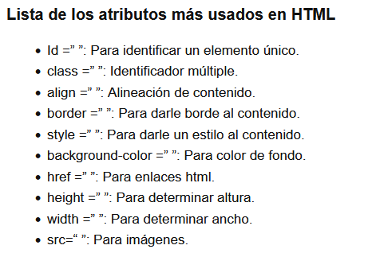

Atributo en HTML
Los atributos en HTML se pueden considerar como información adicional que se coloca siempre en la etiqueta de apertura, esto para añadir, complementar información o significado al elemento HTML al que estamos colocando.
El atributo son distintos ingredientes o modificaciones que puedes hacer a la etiqueta. Como por ejemplo colocarle un ID, especificar algún evento (como los casos de onsubmit y onclick), o modificar el aspecto visual (como cambiarle el color a un texto).

Referencia: Arkaitzgarro. CAPÍTULO 3 ETIQUETAS, ATRIBUTOS Y ELEMENTOS. Recuperado de https://www.arkaitzgarro.com/xhtml/capitulo-3.html

Referencia: Desarrolladoresweb. (2019). Atributos en HTML – qué son, para qué sirven y cuáles son. Recuperado de https://desarrolladoresweb.org/html/atributos-html/
Valores en HTML
Cuando se hace uso de un atributo HTML se debe especificar su valor, este puede representar una cantidad exacta, característica especifica o simplemente en que medida se ejecutará dicho atributo.
El valor se expresa entre comillas después del signo de (=), de acuerdo al atributo, pueden haber una variedad de valores disponibles. Por ejemplo, en caso dealign puede tomar el valor de center (centro), right (derecha), left (izquierda), justify (justificado).
El valor es la especificación de estas modificaciones. ¿Qué debe suceder después del onsubmit? ¿Qué color debe tener el texto? ¿Qué ID tendrá la etiqueta?

Referencia: Developer Mozilla. (2020)CSS básico. Recuperado de https://developer.mozilla.org/es/docs/Learn/Getting_started_with_the_web/CSS_basics
Juan Felipe. (2021). 44 etiquetas HTML que debes conocer. Recuperado de https://acortar.link/3iu4Kg